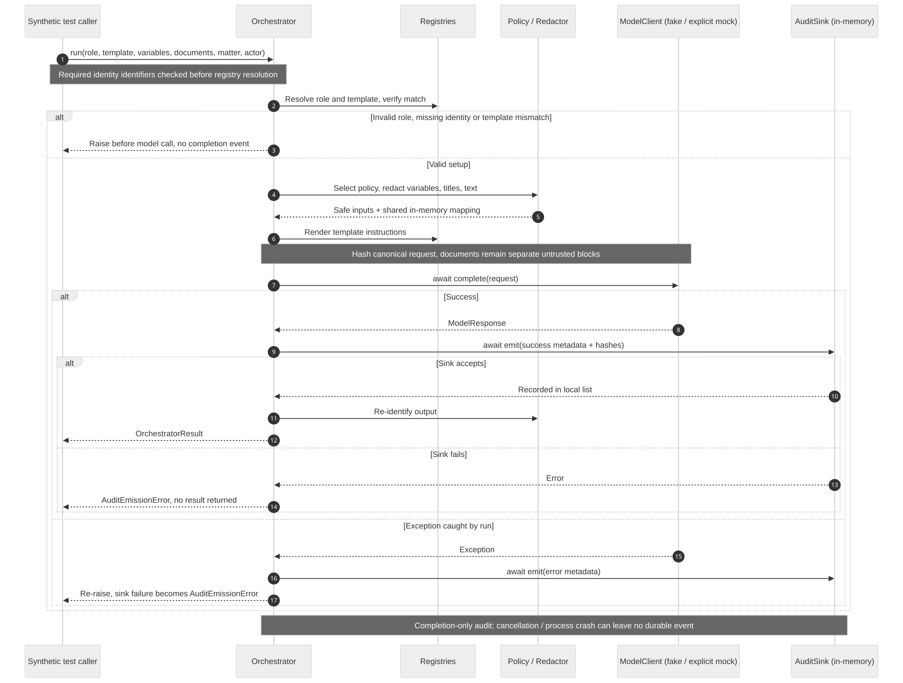

C1 · System context
Intended people and external systems. Dashed external connections are unimplemented.
Open full SVG · Edit source
C2 · Containers
The web app and API run separately. Neither database nor document storage is provisioned.
Open full SVG · Edit source
C3 · API components
The AI module is invoked directly by tests. It is not mounted as an HTTP endpoint.
Open full SVG · Edit source
C4 · Interface-based polymorphism
Injected Python protocols permit behavior substitution without role inheritance trees. Scroll or open the SVG for the full class view.
Open full SVG · Edit source
AI call · Sequencing and failure branches
Audit emission precedes output return. Completion-only, in-memory events cannot prove crash recovery or per-attempt persistence.
Open full SVG · Edit source